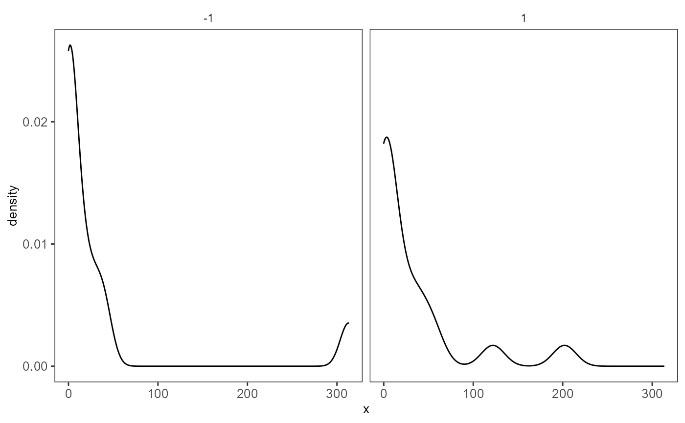

R/ggPlotting.R
plotSCEDensity.RdVisualizes values stored in any slot of a SingleCellExperiment object via a densityn plot.
plotSCEDensity(
inSCE,
slotName,
itemName,
sample = NULL,
feature = NULL,
dimension = NULL,
groupBy = NULL,
xlab = NULL,
ylab = NULL,
axisSize = 10,
axisLabelSize = 10,
defaultTheme = TRUE,
title = NULL,
titleSize = 18,
cutoff = NULL,
combinePlot = "none",
plotLabels = NULL
)Input SingleCellExperiment object with saved dimension reduction components or a variable with saved results. Required.
Desired slot of SingleCellExperiment used for plotting. Possible options: "assays", "colData", "metadata", "reducedDims". Required.
Desired vector within the slot used for plotting. Required.
Character vector. Indicates which sample each cell belongs to.
Desired name of feature stored in assay of SingleCellExperiment object. Only used when "assays" slotName is selected. Default NULL.
Desired dimension stored in the specified reducedDims. Either an integer which indicates the column or a character vector specifies column name. By default, the 1st dimension/column will be used. Only used when "reducedDims" slotName is selected. Default NULL.
Groupings for each numeric value. A user may input a vector equal length to the number of the samples in the SingleCellExperiment object, or can be retrieved from the colData slot. Default NULL.
Character vector. Label for x-axis. Default NULL.
Character vector. Label for y-axis. Default NULL.
Size of x/y-axis ticks. Default 10.
Size of x/y-axis labels. Default 10.
Removes grid in plot and sets axis title size to 10 when TRUE. Default TRUE.
Title of plot. Default NULL.
Size of title of plot. Default 15.
Numeric value. The plot will be annotated with a vertical line if set. Default NULL.
Must be either "all", "sample", or "none". "all" will combine all plots into a single .ggplot object, while "sample" will output a list of plots separated by sample. Default "none".
labels to each plot. If set to "default", will use the name of the samples as the labels. If set to "none", no label will be plotted.
a ggplot object of the density plot.
data("mouseBrainSubsetSCE")
plotSCEDensity(
inSCE = mouseBrainSubsetSCE, slotName = "assays",
itemName = "counts", feature = "Apoe", groupBy = "sex"
)
